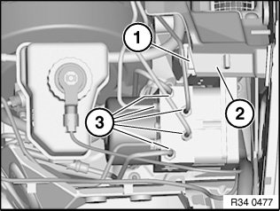
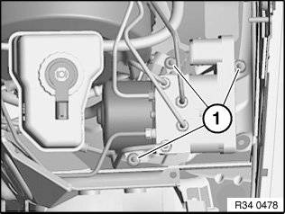
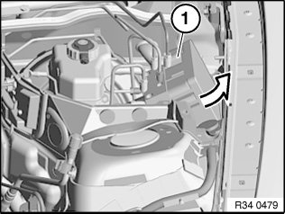
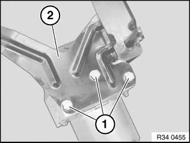
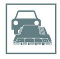

34 51 527 Removing and Installing/Replacing DSC Hydraulic Unit
34 51 527 Removing and installing/replacing DSC hydraulic unitNecessary preliminary work:
^ Read and comply with General Information.
^ Remove lower section of microfilter housing
^ Extract brake fluid
Note:
Extract brake fluid out of expansion tank.
Use a suction bottle used exclusively for drawing off brake fluid.
Do not reuse drawn out brake fluid.
After completing work:
^ Bleed braking system
Important!
Do not mix up brake lines.
If necessary, mark before removal.
Close off connecting bores with seal plugs.

Press cover (2) slightly to one side and disconnect plug connection (1).
Unfasten brake lines (3).
Installation Note:
Tightening torque 34 32 1AZ.

Unscrew nuts (1).
Installation Note:
Tightening torque 34 51 6AZ.
Important!
If necessary, release brake lines from holder on bulkhead.

Brake lines must not be bent!
Tilt out hydraulic unit (1) in direction of side panel.

When replacing hydraulic unit:
Release screws (1) and convert holder (2).
Installation Note:
Tightening torque 34 51 5AZ.
Modify DSC control unit.

When replacing control unit:
- Carry out programming/coding
- Adjustment of steering angle sensor
- Brake line mix-up test